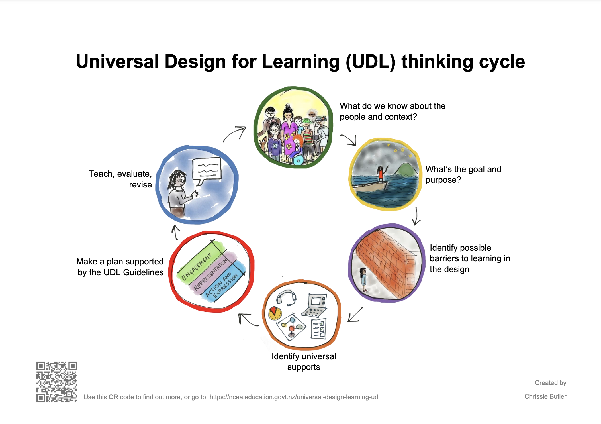

Incorporating universal design into websites involves a thoughtful and
intentional approach to ensure accessibility and inclusivity for users
of all abilities. Firstly, consider the structure and layout of the
website, emphasizing clear and consistent navigation. Implementing
descriptive and meaningful headings aids both sighted and screen reader
users in understanding content hierarchies. Provide alternative text for
images, allowing those with visual impairments to comprehend the visual
elements. Ensure text has sufficient contrast for readability, and use
scalable fonts to accommodate various viewing preferences. Offer
keyboard navigation options to assist users with mobility impairments.
Caption multimedia content for those with hearing impairments, and
provide transcripts for audio elements. Regularly test your website
using accessibility tools and engage with user testing involving
individuals with diverse abilities. Additionally, staying informed about
evolving accessibility standards, such as WCAG, and incorporating them
into your design and development processes is crucial for creating a
universally accessible website. Overall, the key is to integrate
accessibility considerations from the outset and maintain an ongoing
commitment to inclusivity throughout the website's lifecycle.
Mobile First Design
Mobile design is one of the more popular ways of having Universal Design
within a website. Mobile First design is a web development strategy that
emphasizes creating a website with a primary focus on mobile devices
before expanding to larger screens. It recognizes the prevalence of
mobile internet usage and aims to deliver an optimal user experience on
smaller screens. This approach involves prioritizing essential content
and features for mobile users, employing responsive design techniques to
adapt layouts across various screen sizes, and optimizing for mobile
performance to enhance speed and efficiency. User interfaces are
designed with touch interactions in mind, featuring elements like larger
buttons for ease of use. As the screen size increases, the design is
progressively enhanced to take advantage of larger displays while
maintaining a consistent and streamlined user experience. Overall,
Mobile First design not only caters to the growing mobile audience but
also streamlines the design process by starting with the constraints and
priorities of smaller screens.